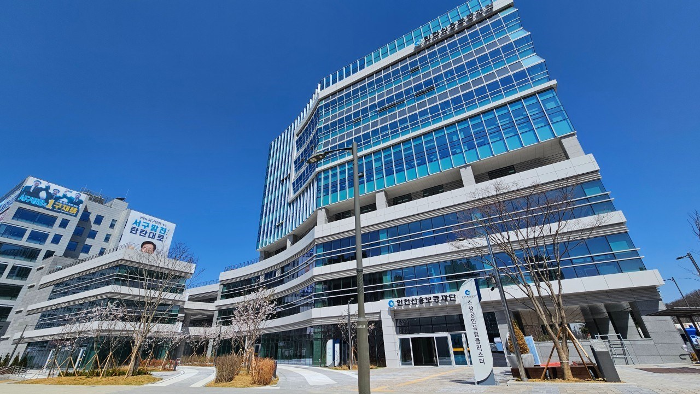
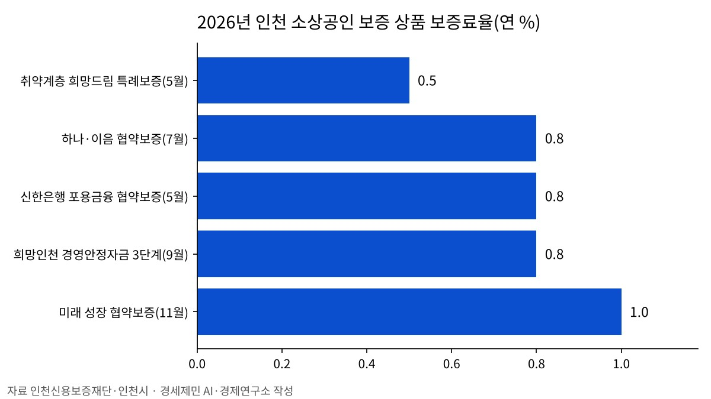

인천신용보증재단, 소상공인 495억원 협약보증 2일부터 접수
업체당 최대 1억원, 보증료 연 1% 고정
신한은행·케이뱅크 33억원 특별출연
시 경영안정자금과 달리 이자 지원 항목 없어
AI경제저널=김갑봉 기자 | 인천신용보증재단(이사장 이부현)은 2일부터 495억원 규모 「미래 성장 협약보증」 신청을 받는다고 2일 밝혔다. 업체당 최대 1억원을 보증하고 보증료는 연 1%로 고정한다.
신한은행이 21억원, 케이뱅크가 12억원 등 모두 33억원을 특별출연했다. 재단은 경기 침체와 내수 부진으로 어려움을 겪는 소기업·소상공인의 경영 안정과 성장 기반 마련을 위해 시행한다고 밝혔다.
업체당 1억원, 5년 동안 나눠 갚아
재단 안내문을 보면 지원 대상은 인천에 있는 중소기업과 소상공인이다. 보증 기간은 5년이고, 5년 동안 매달 원금을 같은 금액으로 나눠 갚는다. 대출 은행은 신한은행과 케이뱅크다.
최근 6개월 안에 재단(다른 지역 재단 포함)에서 새로 보증을 받은 기업은 신청할 수 없다. 재단과 신용보증기금, 기술보증기금 보증잔액을 합쳐 2억원을 넘는 기업도 제외한다.
신규·성실상환·제조업 기업 우대

재단은 신용보증을 처음 이용하는 기업과 기존 보증 대출을 성실히 갚아 온 기업에 보증 한도를 우대한다. 신용도가 우량한 기업과 제조업 기업도 우대 대상이다.
신청은 2일 오전 9시부터 한도가 소진될 때까지 받는다. 재단 모바일 앱 「보증드림」으로 비대면 신청을 하거나, 앱으로 상담을 예약해 지점에서 신청한다. 만 65세 이상 고령자와 장애인, 임산부 등은 예약 없이 지점을 찾아가 신청할 수 있다.
출연금 33억원으로 보증 495억원
보증 공급액 495억원은 두 은행 출연금 33억원의 15배다(연구소 계산). 업체마다 상한 1억원을 모두 쓰면 495곳이 보증을 받는다.
재단이 올해 7월과 5월 낸 협약보증과 견주면 한도는 크고 보증료는 높다. 7월 「인천 하나·이음 협약보증」은 300억원 규모에 한도 5000만원, 보증료 연 0.8%였다. 인천e음 상생가맹점 등 우대 기업은 연 0.5%를 적용했다.
5월 「신한은행 포용금융 협약보증」은 75억원 규모에 한도 5000만원, 보증료 연 0.8%였다. 두 상품에는 1년 거치 뒤 4년 동안 나눠 갚는 방식이 있었다. 이번 협약보증 안내문에는 거치 기간이 없다.

시 경영안정자금은 이자 2.0%·1.5% 지원
인천시는 올해 「희망인천 소상공인 경영안정자금」을 1월 1000억원, 3월 1145억원, 9월 505억원 세 차례 풀었다. 9월 3단계는 업체당 5000만원 한도에 보증료 연 0.8%를 적용했다.
시는 3단계 대출에 첫 1년 연 2.0%, 이후 2년 연 1.5%의 이자를 지원한다. 5월 「취약계층 희망드림 특례보증」은 보증료 연 0.5%에 같은 이자 지원을 붙였다.
이번 미래 성장 협약보증 안내문에는 이자 지원 항목이 없다. 시 경영안정자금 3단계보다 보증 한도는 두 배이고 보증료는 연 0.2%포인트 높다.
인천 1분기 성장률 1.6%, 전국 3.8%
국가데이터처 집계를 보면 올해 1분기 인천 실질 지역내총생산은 1년 전보다 1.6% 늘었다. 전국 성장률은 3.8%다.
2분기 인천 소매판매는 2.4% 늘었고 소비자물가는 2.8% 올랐다. 석유류 가격이 24.6% 올랐다. 인천 고용률은 0.4%포인트 내렸고, 20대 고용률은 3.8%포인트 내렸다.
인천시는 올해 소상공인 지원 시행계획에 2196억원을 투입한다고 지난 4월 밝혔다. 5대 전략과 17개 추진 과제를 세우고 「자립기반 강화」와 「경영·금융 안전망 구축」을 중심으로 지원체계를 짠다고 밝혔다.
이부현 이사장은 "이번 협약보증은 어려운 경제여건 속에서도 성실하게 사업을 운영하며 성장 가능성을 키워온 소기업·소상공인을 위해 마련됐다"고 말했다. 문의는 재단 대표전화 1577-3790이다.
참고문헌
- "인천신용보증재단, 미래성장 협약보증 시행 [2026.11.2. 보도]", 인천신용보증재단, 2026.11.2., https://www.icsinbo.or.kr/home/board/brdDetail.do?menu_cd=000104&num=1331
- "2026 미래 성장 협약보증", 인천신용보증재단, 2026.11.2., https://www.icsinbo.or.kr/home/board/brdDetail.do?menu_cd=000196&num=1149
- "2026 인천 하나·이음 협약보증 시행 안내", 인천신용보증재단, 2026.7.27., https://www.icsinbo.or.kr/home/board/brdDetail.do?menu_cd=000096&num=1459
- "2026 신한은행 포용금융 협약보증", 인천신용보증재단, 2026.5.12., https://www.icsinbo.or.kr/home/board/brdDetail.do?menu_cd=000196&num=1142
- "인천시, 추석 앞두고 소상공인 경영안정자금 505억 원 전격 지원… 초저금리로 유동성 공급", 인천시, 2026.9.14., https://www.incheon.go.kr/IC010205/view?repSeq=DOM_0000000015513499
- "인천시, 소상공인 경영안정 위해 225억 원 규모 특례보증 지원", 인천시, 2026.5.21., https://www.incheon.go.kr/IC010205/view?repSeq=DOM_0000000014740609
- "생존 넘어 성장으로…인천시, 소상공인 통합 지원체계 강화", 인천시, 2026.4.21., https://www.incheon.go.kr/IC010205/view?repSeq=DOM_0000000014584048
- "2026년 2/4분기 지역경제동향", 국가데이터처, 2026.8.19., https://eiec.kdi.re.kr/policy/materialView.do?num=285532
[사진 출처]
- [사진1] 인천광역시, 「생존 넘어 성장으로…인천시, 소상공인 통합 지원체계 강화」 보도자료 첨부 사진, 2026.4.21., 공공누리 출처표시, https://www.incheon.go.kr/IC010205/view?repSeq=DOM_0000000014584048
관련기사
- 누적 수출 9000억 달러 첫 돌파…인천 비중은 5.1%로 낮아져
- 인천시·필라델피아, 바이오·교육·문화 교류 확대 논의
- 인천 택시 4606대, 2028 G20 정상회의 유치 홍보 나선다
- 인천시, 강화·옹진 섬 식수 공급 개선 토론회 열어
저작권자 © AI경제저널 무단전재 및 재배포, AI학습 및 활용 금지